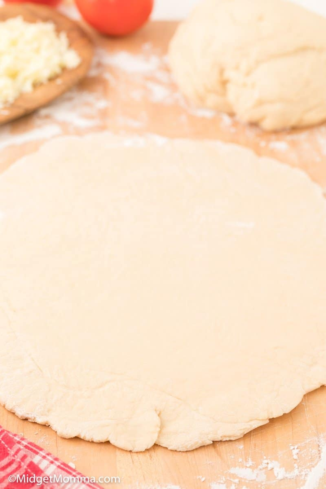

Pizza Dough

Why this recipe?
Are you new to cooking and would like to save?
Well, this recipe is perfect for you, as it is very beginner friendly
and doesn't require many ingredients to get started.
It's also quick to make, so if you're hungry and in a hurry,
get cookin' some pizza-dough.
Ingredients
- Warm Water
- Active Dry Yeast
- Salt
- Olive Oil
- All-Purpose Flour
How to makin' on that pizza dough!
- Pour the water into the bowl of a stand mixer.
- Sprinkle the yeast on top of the water and let it bloom for 5 minutes.
- Add the salt, olive oil, to the bowl and mix well. If you want to add any spices like garlic powder or Italian Seasoning add that in and mix.
- Slowly add the flour to the bowl and place the bowl on your mixer with a dough hook attachment.
-
Mix on low speed until the dough starts to form.
Gradually turn the speed to medium until the dough ball forms.
If you are using a mixing bowl and a wooden spoon to mix add the flour in little by little mixing after you add it in until all of the flour is mixed in.
- If the dough is too sticky you can add a pinch more flour.
If the dough is too dry you can add a little bit more water.
Knead the dough ball in the mixer for 10 minutes on medium speed.
You want the dough to be slightly sticky but manageable in your hands.
You will know the dough is done when it is pulling away from the edges of the bowl into a ball of dough shape without you having to push it all together.
- Remove the dough from the mixer and divide it in half.
-
Place the dough balls on a floured surface and cover with a damp towel or your mixing bowl and let the pizza dough rise for an hour.
Separate the dough into as many pizzas as you would like.
We normally make 2 large homemade pizzas with this recipe.
-
Roll the dough out to the desired thickness.
Sprinkle a small amount of cornmeal onto your pizza stone or pan.
Prebake the pizza crust in a 500°F oven for 2 minutes.
-
Flip the dough over and top with your topping of choice.
Bake for 6-8 minutes until golden brown.
Back to Odin Recipes Homepage